Neural ModelS#
NeMoS (Neural ModelS) is a statistical modeling framework for systems neuroscience, powered by JAX. At its core are GPU-accelerated, well-tested implementations of the standard models. They follow scikit-learn’s API, so they work with its cross-validation and model-selection tools, and they take data as numpy arrays or as pynapple objects.
Models
Building the features
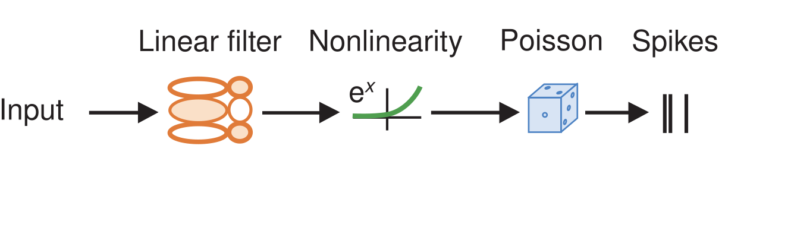
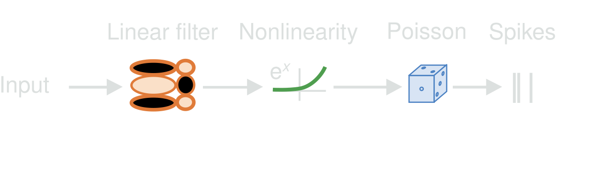
Encoding models for single neurons and populations.
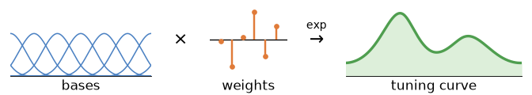
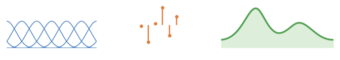
B-splines, raised cosines, Fourier, and many more.
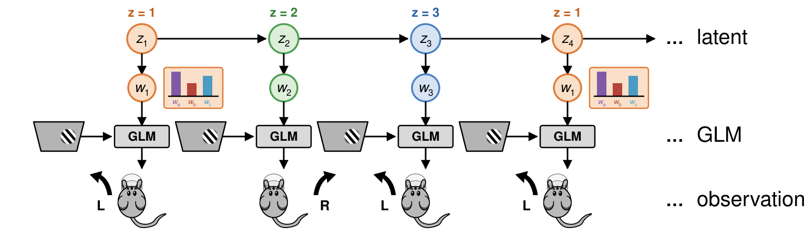
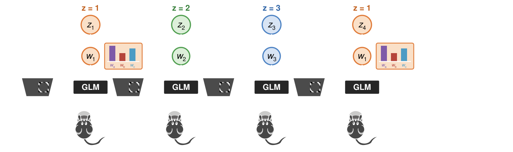
Encoding models for non-stationary responses.
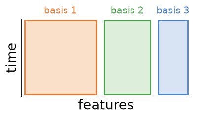
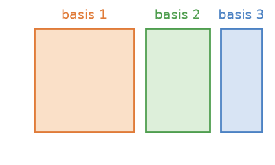
One block per input.

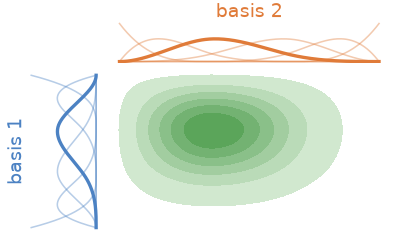
Joint effects of two inputs.
Examples#
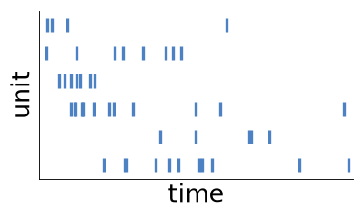
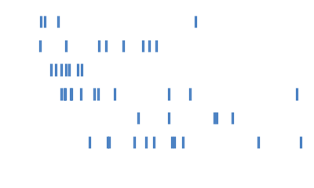
GLM
GLM-HMM
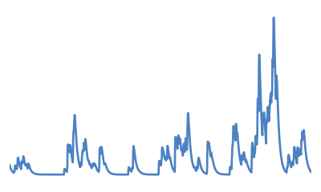

GLM
GLM-HMM

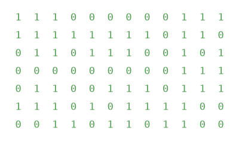
GLM
GLM-HMM
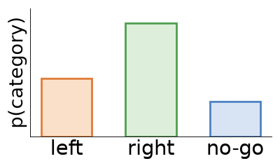
ClassifierGLM
Model components#
Observation models
The observation model can be swapped for any of these, with one exception: categorical responses, which are fit with ClassifierGLM, a separate class that fixes CategoricalObservations.
Poisson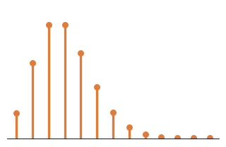
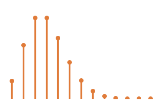
NegativeBinomial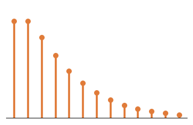
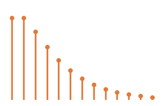
Gamma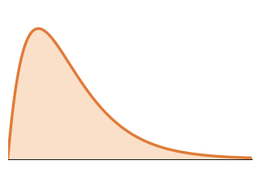
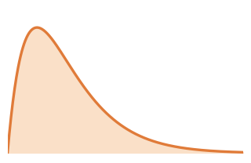
Gaussian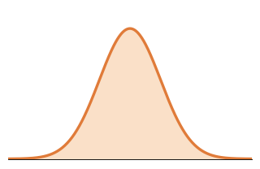
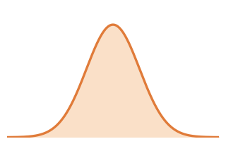
Bernoulli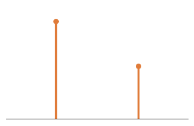
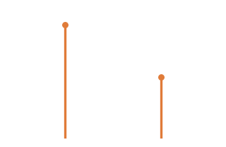
Categorical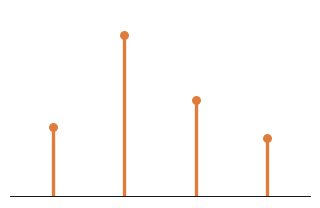
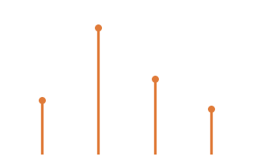
Regularizers
Swapping one for another is a single argument: regularizer="Ridge", with a regularizer_strength to set how hard it bites. UnRegularized is the default, and each of the others is drawn below as the set of coefficients it admits.
Ridge
Lasso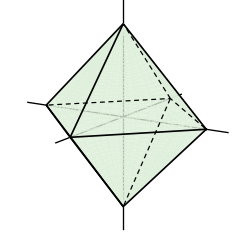
GroupLasso
ElasticNet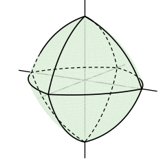
Learning Resources: Neuromatch Academy’s Lessons | Cosyne 2018 Tutorial
Useful Links: Getting Help | Issue Tracker | Contributing Guidelines
License#
Open source, licensed under MIT.
Cite Us#
If you use NeMoS in academic work, please cite the software. See the Citation Guide and Bibliography for more details.
Support#
This package is supported by:
The Center for Computational Neuroscience, in the Flatiron Institute of the Simons Foundation.
The NIH BRAIN Initiative (1RF1MH133778).